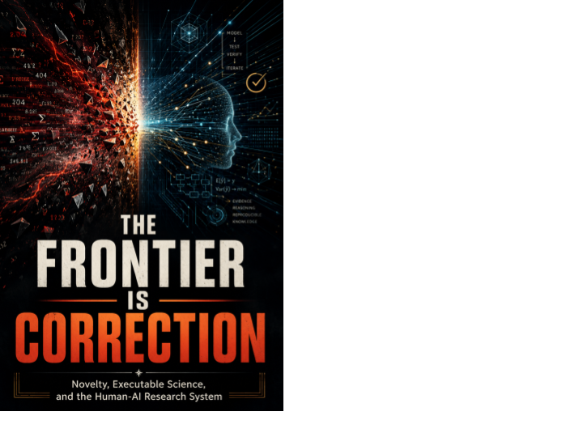

Executable Science · Axiologic Research Editions
The Frontier Is Correction
Principles and Technology Concepts for Executable, AI-Automated, Human-Governed Science
When candidate science becomes abundant, the decisive capability is to let evidence, critics and reality force a revision.
When ideas become cheap, correction becomes scarce
AI can now generate literature syntheses, hypotheses, code, equations, experimental plans, reviews and manuscripts faster than institutions can determine what is genuinely new, what caused an apparent result or who has authority to act. The Frontier Is Correction begins from that change in scarcity. Candidate science becomes abundant before validation, causal attribution, institutional judgment and responsible control do.
The book’s governing claim is deliberately practical: a scientific system is not defined only by its ability to formulate falsifiable statements. It needs a credible path by which material error can be detected, attributed, preserved, communicated and converted into a change of model, method, scope or question. Automation becomes scientifically meaningful when it improves that path.
A programme, not a single machine
What should an executable research programme contain? The proposed families include living specifications, evidence-carrying research objects, semantic version control, governed workbenches, executable research languages, persistent scientific memory and retrieval that can surface contradiction and negative evidence as well as similarity.
How are claims corrected? The programme connects independent critics, severe-test design, causal challenge, replication, claim-specific peer review, validity dossiers and promotion rules that require qualitatively different evidence rather than more confidence from the same source. It also considers active experimentation, laboratory connectors, formal discovery and domain-specific rigor profiles.
Who remains in command? Human and legitimate institutional authority must govern consequence, release, appeal, credit and benefit. The book rejects a single sovereign model, final ontology or universal evaluator. Deterministic operations can be stabilized where appropriate; contested interpretation must remain bounded, inspectable and open to challenge.
A fast implementation of an underspecified scientific idea does not accelerate science; it accelerates the production of ambiguity.
Technology concepts that can fail productively
Revision 5 reorganizes the work as a research programme rather than a history of its composition. Its concepts are working names and its boundaries are provisional. Their purpose is to make vague ambitions concrete enough to criticize, compare, implement or reject: layers, tools, agents, infrastructures, experiments and explicit conditions of failure.
This is a book for AI-for-science teams, scientific-software builders, funders, evaluators and institutions concerned with research sovereignty. It asks for a science able to retain anomalies, abandoned paths, uncertainty and dissent—because those are often the places from which a correction must begin.